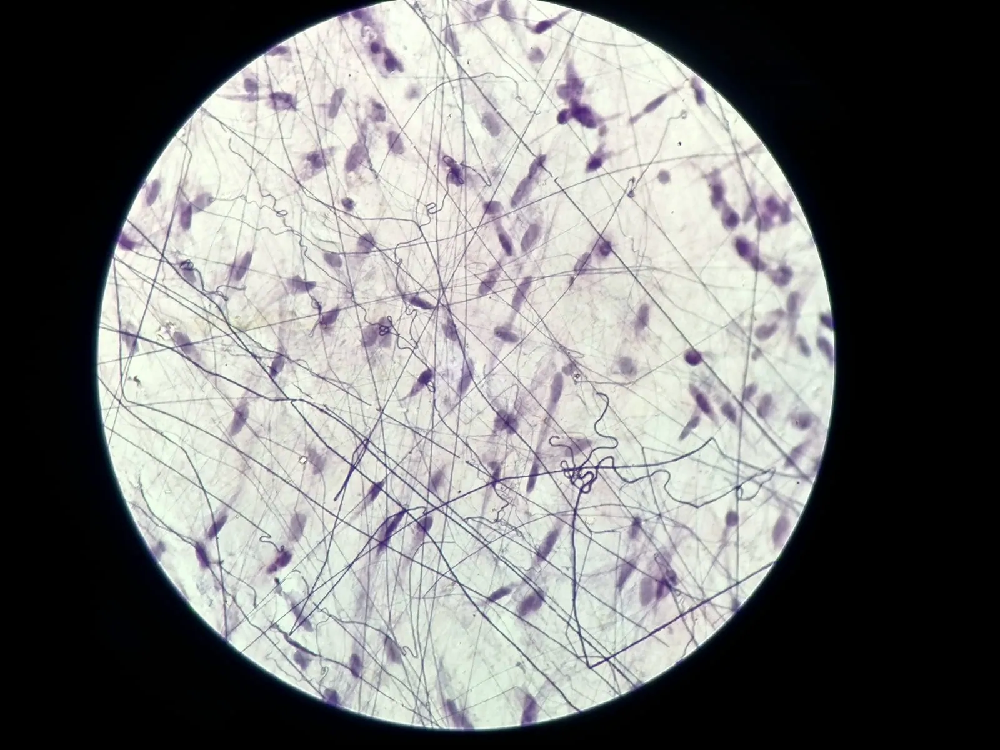
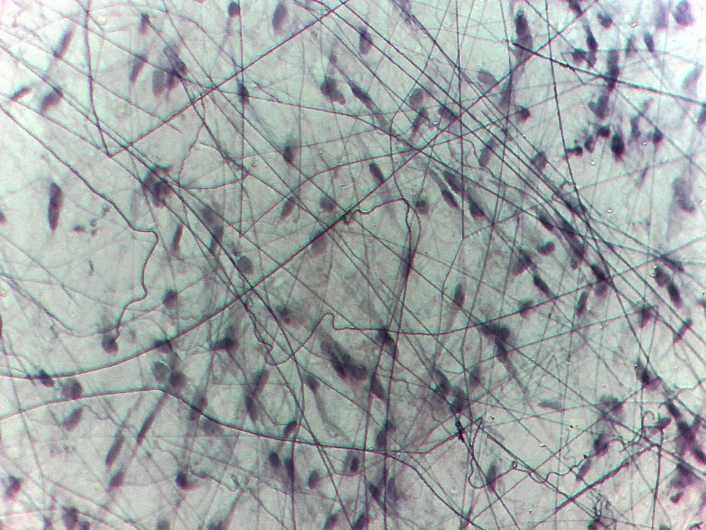

Lâmina 09 · Tecido conjuntivo
Fibras colágenas e elásticas


Toque na imagem para ampliar. No computador, use as setas do teclado para trocar de imagem.
Lâmina 09 · Tecido conjuntivo


Toque na imagem para ampliar. No computador, use as setas do teclado para trocar de imagem.